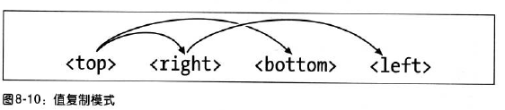

大多数正常流元素间出现的间隔都是因为存在元素外边距。
设置元素的外边距时，可以使用任何长度值。margin设置4个值的时候的顺序是：top right bottom left
外边距设置的百分数值，是相对于父元素的width计算的。
这个段落的外边距是400*0.05=20px;
如果没有为元素设置width，元素框的总宽度取决于父元素的width，这就有可能得到"流式"页面，即元素的外边距会扩大或缩小以适应父元素的实际大小。
这个段落的外边距会随着窗体的变化而变化。
有时，为外边距输入的值会有些重复:p{margin:0.25em 1em 0.25em 1em;}，这时，我们可以使用简化的方式：p{margin:0.25em 1em;}.值复制的规则如下图所示:

行内元素设置外边距对于行高没有任何影响，但是他可以影响行内元素两端的效果。
替换元素设置的外边距确实会影响行高。可能会使行高增加或减少，这取决于上下边距的值。
第一个段落
第二个段落
第三个段落
第四个段落